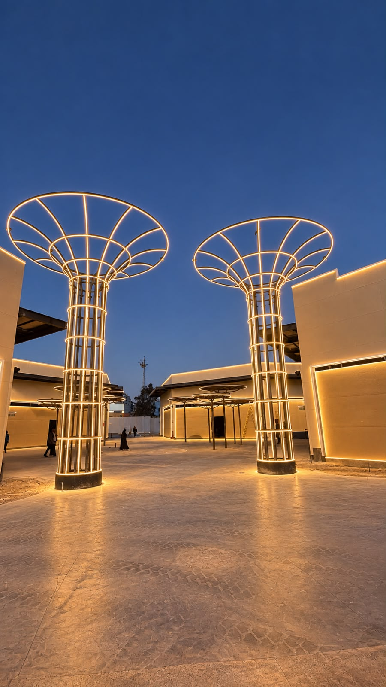

JOKER PLAZA · LIGHTMAN
Nos vemos
bajo la luz.
Dos torres. Un mismo pulso.
Un nuevo punto de encuentro.
El color viaja por cada contorno.
La luz se siente como una sola línea.
Activa el sonido y elige tu momento.
UN LUGAR PARA QUEDARSE
La plaza cambia.
El encuentro permanece.
Una bienvenida dorada al caer la tarde, un pulso de color para celebrar y una aurora para cerrar la noche. Dos estructuras que se responden a través de sus columnas, aros y coronas, siempre con la suavidad del neón.

LA ESTRUCTURA · TU REFERENCIAMISMA SILUETA · NUEVO MOVIMIENTO
El contorno se conserva.
La luz cobra vida.
Costillas verticales que se abren hacia el cielo. Aros que envuelven las columnas. Coronas que conectan las dos torres. El delineado de la fotografía guía el modelo y las tres coreografías.
Difusor continuo en todo el recorrido, con una línea de luz uniforme y sin puntos visibles.
Color y movimiento independientes detrás del difusor. Barridos suaves, ondas y diálogos entre las torres.
Tres pistas instrumentales originales, con apertura, desarrollo y final propios.